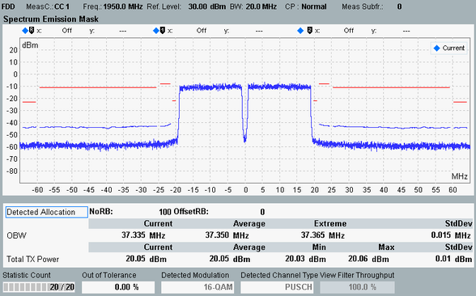
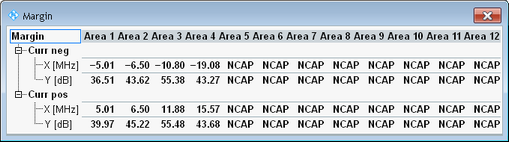

The spectrum emission mask results are displayed in a diagram and as a table of statistical results. Additional margin results can be shown/hidden via hotkey.

Without carrier aggregation, the measurement covers a symmetric frequency range around the carrier center frequency. With carrier aggregation, all component carriers are measured. So the measurement covers a symmetric frequency range around the center frequency of the aggregated bandwidth.
Up to three traces are measured in parallel, with different resolution bandwidths (RBW). A continuous trace with 30 kHz or 50 kHz RBW is always measured. The other two traces are only displayed for frequency ranges with active limits. Depending on the limits, the traces are hidden completely, displayed partially or displayed for the entire out-of-band range. The resolution bandwidths for the three traces are listed in the following table.
Trace | NS_x value | Channel BW / MHz | RBW |
|---|---|---|---|
1 | NS_27 | 1.4, 3 | 30 kHz |
5, 10, 15, 20 | 50 kHz | ||
other NS_x | any | 30 kHz | |
2 | NS_27 | 1.4, 3, 5, 10 | 100 kHz |
15 | 150 kHz | ||
20 | 200 kHz | ||
other NS_x | any | 100 kHz | |
3 | any | any | 1 MHz |
The RBW increases from trace 1 to trace 3, so the measured power increases too. Trace 1 is always at the bottom, trace 3 at the top and trace 2 in-between (if trace 2 and trace 3 are visible at all).
The shape of the resolution filter is configurable for trace 2 and trace 3 (Gaussian or bandpass). For trace 1, a Gaussian filter is used.
According to 3GPP TS 36.521, the measurement must be carried out at maximum output power of the UE.
See also "Spectrum Emission Mask".
To show/hide the margin results, use the softkey - hotkey combination "Display" - "Margin On | Off".

A margin indicates the vertical distance between the spectrum emission mask limit line and a trace. For each emission mask area, the margin represents the "worst" value, i.e. the minimum determined for the frequencies of the area:
Margin = minimum (P(f)mask - P(f)trace)
A negative margin indicates that the trace is located above the limit line, i.e. the limit is exceeded.
The margin result display presents for each active area an "X [MHz]" and a "Y [dB]" value, for negative ("neg") and positive ("pos") offset frequencies. The Y value indicates the margin (worst value within area). The X value indicates the frequency offset at which the margin value was found. These frequency offsets are indicated relative to the center frequency.
The screenshot above shows margin results for the current trace. Corresponding margin results are displayed for all active traces (current, average, maximum trace). In this context, "Average" means "margins for average trace" and not "average values of margins for current trace". "Minimum" means "margins for maximum trace" (resulting in minimum margins).
The "Total TX Power" in the table indicates the sum of the TX power of all component carriers. For other table results, see "View TX Measurement and BLER".
For the parameters at the bottom, see "Common View Elements".
For query of the spectrum emission mask results via remote control, see "Spectrum Emission Results".